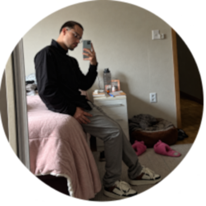

Como falar comigo ?
 https://x.com/mCrobalo - Para me encontrar no Twitter!
https://x.com/mCrobalo - Para me encontrar no Twitter! https://www.linkedin.com/in/matheus-robalo-3b95511a9/ - Para me encontrar no Linkedin
https://www.linkedin.com/in/matheus-robalo-3b95511a9/ - Para me encontrar no Linkedin

Meu nome é Matheus Carneiro Robalo tenho 24 anos e pretendo ser desenvolvedor full stack mas voltado ao front-end, moro em Gravatai em Rio Grande do Sul, gosto de aprender coisas novas e sou curioso com tudo. terminando faculdade de Analise e Desenvolvimento de Sistemas em junho de 2027 e sou viciado em computador, espero poder viver todos meus sonhos e tambem viver ao lado da pessoa q eu mais amo, minha esposa Camila!
https://x.com/mCrobalo - Para me encontrar no Twitter! https://www.linkedin.com/in/matheus-robalo-3b95511a9/ - Para me encontrar no Linkedin